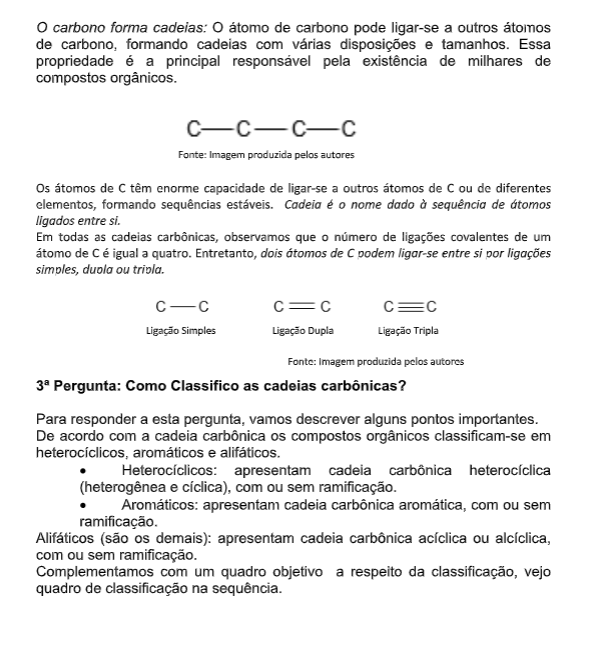
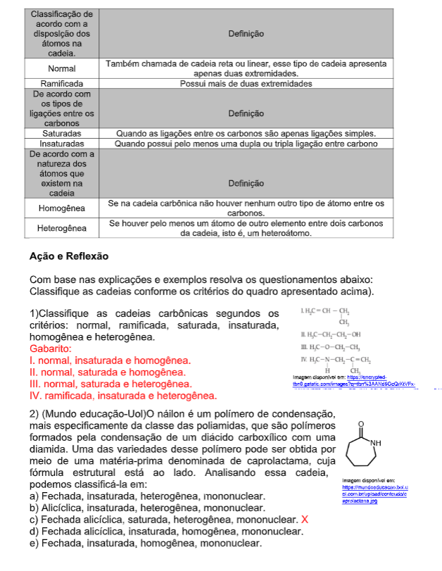
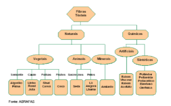

Capítulo 5
Indústria Petrolífera e diversas e as representações gráficas
Como levar em consideração os conceitos movimentos com velocidades variáveis e suas projeções gráficas, no setor petrolífero? Em que situações podemos aplicar estes conceitos neste setor?
CONTEXTUALIZANDOO transporte de insumos para os diversos setores, bem como a chegada de veículos nos pontos onde se localizam as petrolíferas é muito comum, independente das quantidades ou finalidades, este setor acaba por ser primordial para setores secundários, haja visto, situações excepcionais em que ocorreram contextos de queda de produção e toda a cadeia de produção acabam sentindo. Os outros setores que vão até as petrolíferas e se abastecem dos produtos, obrigatoriamente retornam aos seus pontos de origem, e são estes casos que envolvem conceitos que nos interessam para entender os conceitos relevantes desta categoria de movimentos. Conceitos estes relevantes, portanto, para nosso contexto de estudos e cotidiano. 
(Re)construindo ConceitosNos movimentos regressivos as projeções gráficas podem aparecer em diversos contextos, neste capítulo vamos perceber como podemos utilizá-la para entender os movimentos com velocidades variáveis. Basearemos nosso estudo sempre em questionamentos.
1º Pergunta: Como elaborar gráficos da variação da posição em função do tempo (Sxt), da velocidade em função do tempo (Vxt) e da aceleração em função do tempo (axt) em um movimento regressivo acelerado? Para responder a estas questões utilizaremos um exemplo do capítulo anterior de forma adaptada, para demonstrar as características das representações gráficas. ATENÇÃO! Esta situação corresponde a um objeto retornando a origem, porém acelerando, para que isto ocorra, tanto a ACELERAÇÃO quanto a VELOCIDADE devem ser NEGATIVAS. Uma empilhadeira desloca uma certa quantidade varia no tempo de acordo com a aceleração de -2m/s 2 supondo que a empilhadeira tem velocidade inicial
